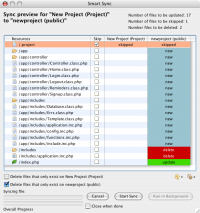
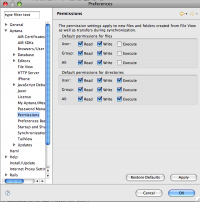

Contents |
What
The Smart Sync tool lets you quickly compare files in your local project with those in the associated Aptana Cloud site and deploy them.
When
- You're ready to deploy your project to the Cloud site
- You need to bring changes from other team members down from the Cloud site
How
Using Smart Sync
  Smart Sync Tool
Smart Sync Tool
{kind=link}
After Smart Sync is launched, it will compare files in the local project with files on the Cloud site. A list will be generated, along with a status on each file to be synced (it will be either "create it", "update it", "overwrite it", or "deleted it"). Syncing of a file can be skipped by clicking the "skip" check box in the column next to the file's name.
A summary in the top right corner will tell you the number of files to be updated, skipped, or deleted.
By default the Delete orphaned files on <cloud_site> box is checked. This will remove from the Aptana Cloud any files which you have deleted locally since your last sync.
If you check the Delete orphaned files on <local_project> box, files which have been deleted from the Aptana Cloud site - or more commonly, which have never been synced - will be removed from your local project.
{kind=link}
To start the sync, click the "Start Sync" button.
Once the sync is started, you can click "Run in Background". If "Close when done" is checked, the Smart Sync window will close on its own when syncing is complete.
Changing default permissions
 Permissions preferences panel
{kind=link}
Default permissions are set on the Aptana Studio preferences dialog, on the Aptana -> Permissions panel. You may set the defaults differently for files and folders.
Launching Smart Sync
There are several ways to launch the Smart Sync window.
{kind=link}
From the project view, on projects that are deployed to the Aptana Cloud, you can click the "sync" icon (see Displaying the Project View for details).
{kind=link}
From the Aptana Home - My Cloud screen, projects deployed to the Aptana Cloud will have a "Synchronize" button next to them. Clicking this launches SmartSync (see Aptana Home - My Cloud for details).
From the My Cloud - Overview screen - the main Cloud screen for a single cloud project, you can click the "Synchronize" button to launch Smart Sync (see My Cloud - Overview for details).